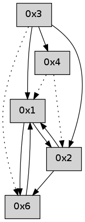

>> << IDX [start] -100 -25 -5 +0 +5 +25 +100 [380.057139158]
 Previous packets
----------------------------------------------------------------------
375.136058 beacon01(adaf) #0 coord=01,02,05,03,04,06 cycle=432.0ms assoc
-- color-indic=0 64 9a cd
375.146018 beacon02(adaf) #0 coord=01,02,05,03,04,06 cycle=432.0ms assoc 64 cb 32
375.156019 beacon05(adaf) #0 coord=01,02,05,03,04,06 cycle=432.0ms assoc 64 6d 18
375.166020 beacon03(adaf) #0 coord=01,02,05,03,04,06 cycle=432.0ms assoc 64 f1 3c
375.176021 beacon04(adaf) #0 coord=01,02,05,03,04,06 cycle=432.0ms assoc 64 57 16
375.186021 beacon06(adaf) #0 coord=01,02,05,03,04,06 cycle=432.0ms assoc 64 23 0a
375.199617 [Hello(1): seq=71 sym=6,2 sysInfo= stat=6:7,0,0,0/2:4,0,0,0]
----------------------------------------------------------------------
375.628167 beacon01(adaf) #0 coord=01,02,05,03,04,06 cycle=432.0ms assoc
-- color-indic=0 64 5e a2
375.638127 beacon02(adaf) #0 coord=01,02,05,03,04,06 cycle=432.0ms assoc 64 0f 5d
375.648128 beacon05(adaf) #0 coord=01,02,05,03,04,06 cycle=432.0ms assoc 64 a9 77
375.658128 beacon03(adaf) #0 coord=01,02,05,03,04,06 cycle=432.0ms assoc 64 35 53
375.668127 beacon04(adaf) #0 coord=01,02,05,03,04,06 cycle=432.0ms assoc 64 93 79
375.678128 beacon06(adaf) #0 coord=01,02,05,03,04,06 cycle=432.0ms assoc 64 e7 65
----------------------------------------------------------------------
376.120274 beacon01(adaf) #0 coord=01,02,05,03,04,06 cycle=432.0ms assoc
-- color-indic=0 64 00 c3
376.130235 beacon02(adaf) #0 coord=01,02,05,03,04,06 cycle=432.0ms assoc 64 51 3c
376.140235 beacon05(adaf) #0 coord=01,02,05,03,04,06 cycle=432.0ms assoc 64 f7 16
376.150237 beacon03(adaf) #0 coord=01,02,05,03,04,06 cycle=432.0ms assoc 64 6b 32
376.160236 beacon04(adaf) #0 coord=01,02,05,03,04,06 cycle=432.0ms assoc 64 cd 18
376.170235 beacon06(adaf) #0 coord=01,02,05,03,04,06 cycle=432.0ms assoc 64 b9 04
376.181888 [Hello(4): seq=173 asym=1,2 sysInfo= stat=1:13,0,0,0/2:4,0,0,0]
376.184951 [Hello(1): seq=72 sym=6,2 sysInfo= stat=6:7,0,0,0/2:4,0,0,0]
----------------------------------------------------------------------
376.612383 beacon01(adaf) #0 coord=01,02,05,03,04,06 cycle=432.0ms assoc
-- color-indic=0 64 c4 ac
376.622344 beacon02(adaf) #0 coord=01,02,05,03,04,06 cycle=432.0ms assoc 64 95 53
376.632344 beacon05(adaf) #0 coord=01,02,05,03,04,06 cycle=432.0ms assoc 64 33 79
376.642344 beacon03(adaf) #0 coord=01,02,05,03,04,06 cycle=432.0ms assoc 64 af 5d
376.652346 beacon04(adaf) #0 coord=01,02,05,03,04,06 cycle=432.0ms assoc 64 09 77
376.662344 beacon06(adaf) #0 coord=01,02,05,03,04,06 cycle=432.0ms assoc 64 7d 6b
----------------------------------------------------------------------
377.104491 beacon01(adaf) #0 coord=01,02,05,03,04,06 cycle=432.0ms assoc
-- color-indic=0 64 88 1c
377.114452 beacon02(adaf) #0 coord=01,02,05,03,04,06 cycle=432.0ms assoc 64 d9 e3
377.124452 beacon05(adaf) #0 coord=01,02,05,03,04,06 cycle=432.0ms assoc 64 7f c9
377.134452 beacon03(adaf) #0 coord=01,02,05,03,04,06 cycle=432.0ms assoc 64 e3 ed
377.144452 beacon04(adaf) #0 coord=01,02,05,03,04,06 cycle=432.0ms assoc 64 45 c7
377.154453 beacon06(adaf) #0 coord=01,02,05,03,04,06 cycle=432.0ms assoc 64 31 db
377.165867 PARSE ERROR************************
Traceback (most recent call last):
File "PacketAnalysis.py", line 167, in showOperaPacket
structPacket = OperaPacketParse.parsePacket(rawPacket)
File "../../pkg-python/HipSens/Core/OperaPacketParse.py", line 461, in parsePacket
return parseHelloMessage(data)
File "../../pkg-python/HipSens/Core/OperaPacketParse.py", line 109, in parseHelloMessage
sysInfo,stability,colorInfo = struct.unpack("!HBB", linkList[0:4])
error: unpack requires a string argument of length 4
48 18 01 00 00 49 00 02 02 04 06 00 02 00 53 04 00 00 00 00 4c 04 00 07 00 04 53 69
----------------------------------------------------------------------
377.596600 beacon01(adaf) #0 coord=01,02,05,03,04,06 cycle=432.0ms assoc
-- color-indic=0 64 4c 73
377.606561 beacon02(adaf) #0 coord=01,02,05,03,04,06 cycle=432.0ms assoc 64 1d 8c
377.616561 beacon05(adaf) #0 coord=01,02,05,03,04,06 cycle=432.0ms assoc 64 bb a6
377.626561 beacon03(adaf) #0 coord=01,02,05,03,04,06 cycle=432.0ms assoc 64 27 82
377.636563 beacon04(adaf) #0 coord=01,02,05,03,04,06 cycle=432.0ms assoc 64 81 a8
377.646562 beacon06(adaf) #0 coord=01,02,05,03,04,06 cycle=432.0ms assoc 64 f5 b4
----------------------------------------------------------------------
378.088707 beacon01(adaf) #0 coord=01,02,05,03,04,06 cycle=432.0ms assoc
-- color-indic=0 64 01 74
378.098668 beacon02(adaf) #0 coord=01,02,05,03,04,06 cycle=432.0ms assoc 64 50 8b
378.108669 beacon05(adaf) #0 coord=01,02,05,03,04,06 cycle=432.0ms assoc 64 f6 a1
378.118670 beacon03(adaf) #0 coord=01,02,05,03,04,06 cycle=432.0ms assoc 64 6a 85
378.128669 beacon04(adaf) #0 coord=01,02,05,03,04,06 cycle=432.0ms assoc 64 cc af
378.138669 beacon06(adaf) #0 coord=01,02,05,03,04,06 cycle=432.0ms assoc 64 b8 b3
378.150080 [Hello(1): seq=74 sym=6,2 sysInfo= stat=6:7,0,0,0/2:4,0,0,0]
378.153978 [Hello(4): seq=175 asym=1,2 sysInfo= stat=1:14,0,0,0/2:4,0,0,0]
----------------------------------------------------------------------
378.580816 beacon01(adaf) #0 coord=01,02,05,03,04,06 cycle=432.0ms assoc
-- color-indic=0 64 c5 1b
378.590776 beacon02(adaf) #0 coord=01,02,05,03,04,06 cycle=432.0ms assoc 64 94 e4
378.600778 beacon05(adaf) #0 coord=01,02,05,03,04,06 cycle=432.0ms assoc 64 32 ce
378.610777 beacon03(adaf) #0 coord=01,02,05,03,04,06 cycle=432.0ms assoc 64 ae ea
378.620777 beacon04(adaf) #0 coord=01,02,05,03,04,06 cycle=432.0ms assoc 64 08 c0
378.630778 beacon06(adaf) #0 coord=01,02,05,03,04,06 cycle=432.0ms assoc 64 7c dc
----------------------------------------------------------------------
379.072923 beacon01(adaf) #0 coord=01,02,05,03,04,06 cycle=432.0ms assoc
-- color-indic=0 64 89 ab
379.082884 beacon02(adaf) #0 coord=01,02,05,03,04,06 cycle=432.0ms assoc 64 d8 54
379.092884 beacon05(adaf) #0 coord=01,02,05,03,04,06 cycle=432.0ms assoc 64 7e 7e
379.102885 beacon03(adaf) #0 coord=01,02,05,03,04,06 cycle=432.0ms assoc 64 e2 5a
379.112884 beacon04(adaf) #0 coord=01,02,05,03,04,06 cycle=432.0ms assoc 64 44 70
379.122886 beacon06(adaf) #0 coord=01,02,05,03,04,06 cycle=432.0ms assoc 64 30 6c
379.134543 [Hello(4): seq=176 asym=1,2 sysInfo= stat=1:14,0,0,0/2:4,0,0,0]
379.137444 [Hello(1): seq=75 sym=6,2 sysInfo= stat=6:7,0,0,0/2:4,0,0,0]
----------------------------------------------------------------------
379.565031 beacon01(adaf) #0 coord=01,02,05,03,04,06 cycle=432.0ms assoc
-- color-indic=0 64 4d c4
379.574992 beacon02(adaf) #0 coord=01,02,05,03,04,06 cycle=432.0ms assoc 64 1c 3b
379.584991 beacon05(adaf) #0 coord=01,02,05,03,04,06 cycle=432.0ms assoc 64 ba 11
379.594991 beacon03(adaf) #0 coord=01,02,05,03,04,06 cycle=432.0ms assoc 64 26 35
379.604994 beacon04(adaf) #0 coord=01,02,05,03,04,06 cycle=432.0ms assoc 64 80 1f
379.614992 beacon06(adaf) #0 coord=01,02,05,03,04,06 cycle=432.0ms assoc 64 f4 03